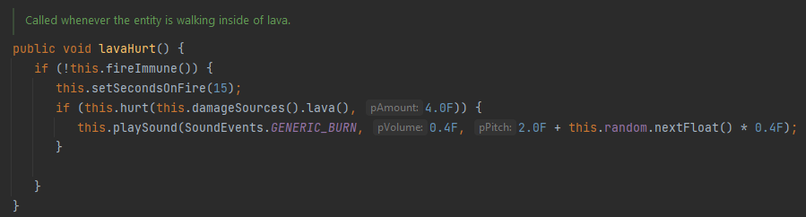
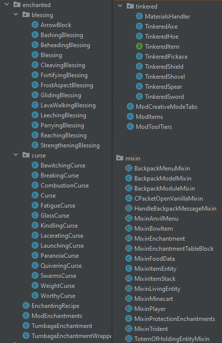
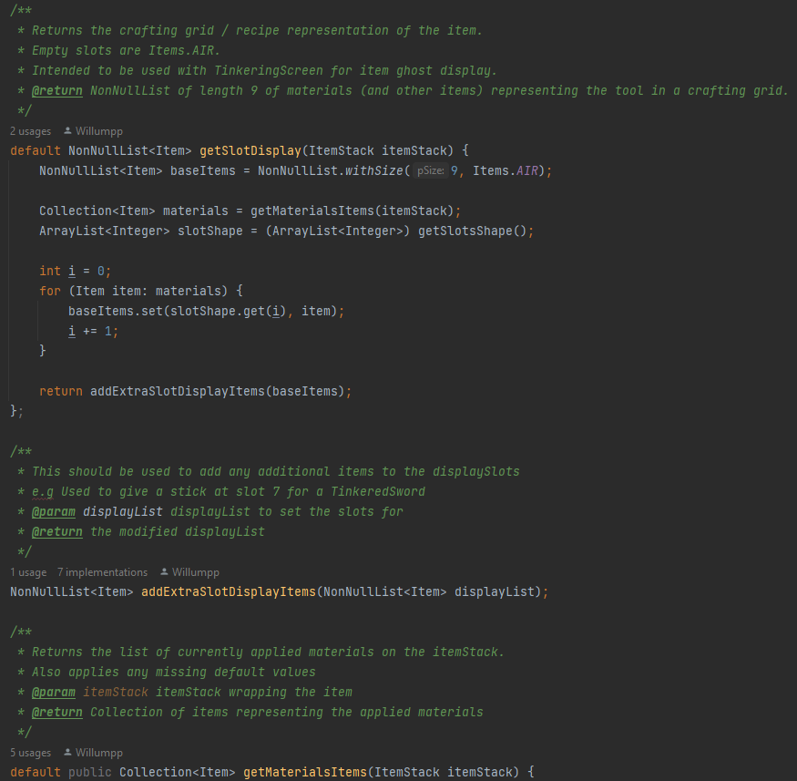
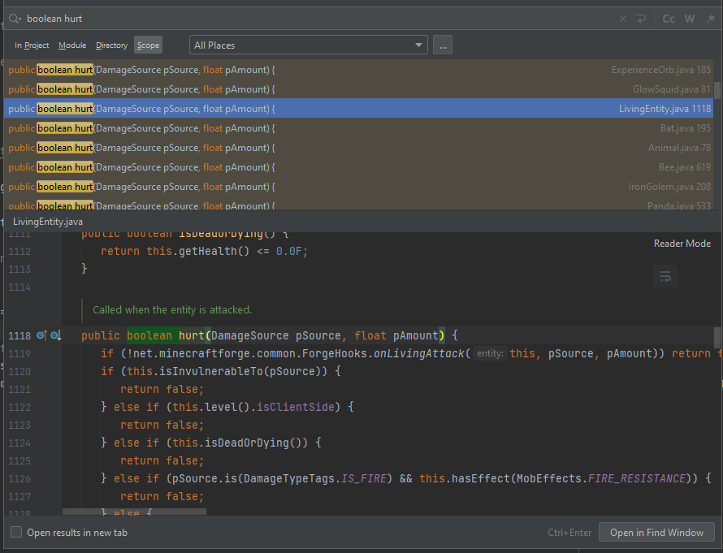
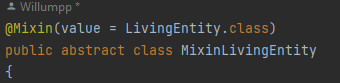
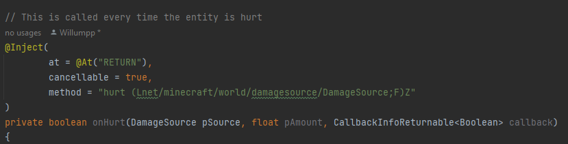
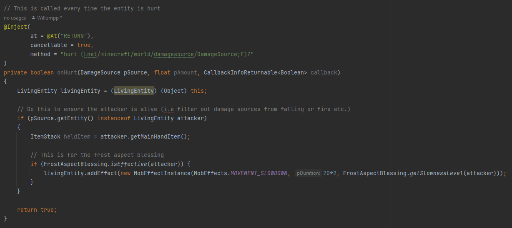

Overview
A Minecraft mod that changes fundamental game mechanics and its combat system. This portoflio entry, however, will go more into the techninal aspect first and cover the Minecraft changes at the end. Everything was programmed in Java, except for the Gradle build tool used to compile the mod.
As mentioned, this was a teamwork project of which I handled all the Java coding and my friend handled its implementation into the game.
Forge API
This project makes use of the Forge API which has been used since 2011 to make all of these mods for Minecraft. The API offers some helpful functions to make mod development easier. The mod development kit it comes with offers a boilerplate implementation of a simple mod and some Gradle files. However, the API was still pretty difficult to learn due to its poor documentation. As a result, the best way to learn implementations of various features was to understand the game code's implementation or another mod's implementation first.
You can read the game code's implementation of Minecraft through a decompiled version of the game. This results in various obfuscated functions but Forge, thankfully, labels them for us.
This is an example of code for a player object in Minecraft:

The part which took the longest for this project was learning how to use Gradle and the Forge API. We set the project's deadline for around 2 months of which we managed to learn everything to do with Minecraft modding from scratch and turn this project into a satisfactory state.
As the project progressed it developed into a cycle of asking "How do we implement X?", "How does the game/existing mods already implement something similar to X?", "What existing game mechanincs and features can we already use to help us make X?". Using our comprehensive knowledge of the game made this process quite effective.
Classes
Tumbaga is made from around 100 classes categorised into different uses for the game. Around 35 change Minecraft's enchanting mechanic, whereas around 20 change Minecraft's tool and combat mechanics. Another 20 are Mixins that change Minecraft's code behind the scenes. The rest are for miscellaneous tasks. As mentioned, this was a teamwork project of which I did all the programming for.
Left is for enchanting, upper right are combat and materials, and bottom left are mixins:
The way I approached managing the enchantments and tools are I used a main "controller" or "helper" class that manages all the relevant classes. For example, "ModEnchantments" intialises and registers all the enchantments and their recipes.
I tried my best to make use of javadoc in order to make my code readable:
Mixins
Mixin is a very poweful tool I utilised to edit the underlying game code during compilation. An example of this is when I might want to detect and apply an enchantment. For instance, if I wanted to apply a slowness effect to a monster when I attack it with a special sword. First, I need to use InteliJ to locate the vanilla code's function for handling enemy hurting:
This code is within the LivingEntity class. All monsters and creatures inherit this function and call it as a super. Now I need to create the class to mixin with the vanilla game's code.
And now I need to target the specific hurt function I found earlier:
The mixin syntax took a while to get used to. You need to target the specific function by specifying the datatypes for its arguments and return value. This is done in that particular format. Next is adding the code thats injected into the function:
This checks that the attacker has the "Frost Aspect" enchantment on their tool and than applies a slowness effect to the hurt entity. As mentioned, this function is now triggered every time an enemy is hurt.
This is attacking a creature before applying the mixin code:

This is attacking a creature after applying the mixin code:

Notice the creature now gets slowed by the attacker. This is shown with their movement speed and blue swirls emitting from the creature. This is primarily what Mixins were used for in this project.